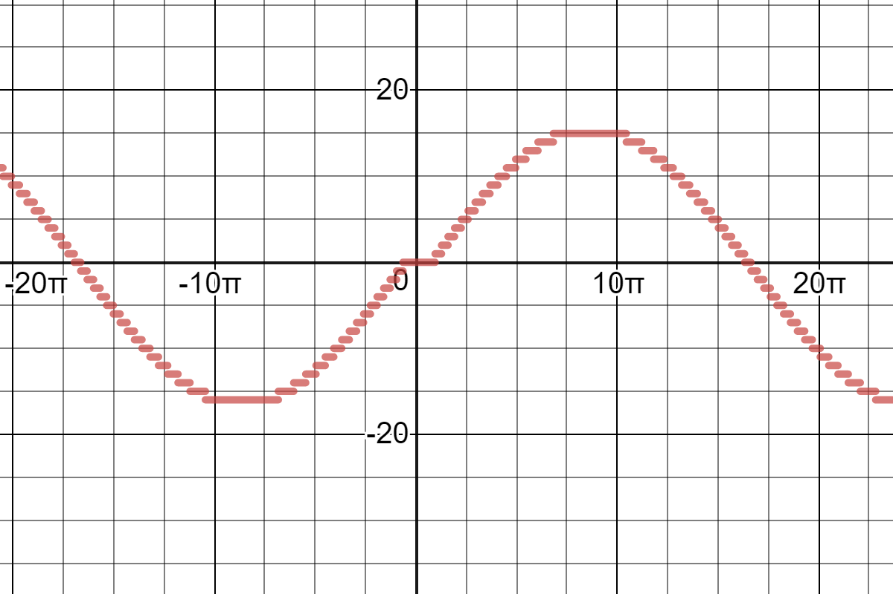

Why does it
take so long?
bare metal for C++developers without embedded-context
What is Bare Metal
- its about garantuees
- "multimedia center" crashes 😐
- airbag not working 😟
- "distance system" blocking bus, blocking bus-gateway, blocking "driving"-bus 😲
- airbag working, but slow😱
Context is different
int main() {
while(1) {
if(read_pin(PortC_2)) {
set_pin(PortA_0);
}
else {
clear_pin(PortA_0);
}
}
}ISR
extern "C"
void PORTC_2_ISR() {
toggle_pin(PortA_0);
clear_interrupt();
}RTOS
void main() {
xTaskCreate(blinki,
"NameOfBlinki",
configMINIMAL_STACK_SIZE,
NULL, mainQUEUE_RECEIVE_TASK_PRIORITY, NULL);
vTaskStartScheduler();
while(1) {};
}
RTOS
static void blinki(){
while(1) {
if(read_pin(PortC_2)) {
set_pin(PortA_0);
}
else {
clear_pin(PortA_0);
}
}
}single thread
- easiest starting point
- often good enough
interrupts
- better & easier timing
- less jitter
- better performance
- needs understanding of more hardware
- understand what 3rd-party libraries are doing
interrupts
 https://www.desmos.com/calculator/5a0v09epxirtos
- more "PC"-like programming
- more stackusage
- interrupts....
- less good performance
"complexity kill"
Niklas Hauser
volatile!
-
people still think its atomic...
interrupts
- priorities!
- or just build fences!
// disable interrupts
__disable_irq();
very_serious_function();
// enable interrupts
__enable_irq();interrupts
what about locks?in interrupts = deadlock
QUIZTIME
godbolt.org/z/KLlguYQUIZTIME
volatile uint32_t input; //fakeinput
volatile uint32_t output; //fakeoutput
volatile uint32_t read_counter = 0;
volatile uint32_t write_counter = 0;
#define ringbuffersize 30
volatile uint32_t ringbuffer[ringbuffersize];
QUIZTIME
void one() { // called in main()
ringbuffer[read_counter] = input;
read_counter++;
if (read_counter >= ringbuffersize) {
read_counter - ringbuffersize;
}
}
void two() { // called in Interrupt Service Routine!
while (read_counter > write_counter) {
output = ringbuffer[write_counter];
write_counter++;
if (write_counter >= ringbuffersize) {
write_counter - ringbuffersize;
}
}
}
QUIZTIME - SOLUTION
void one() { // called in main()
// read_counter = 29/maximum
ringbuffer[read_counter] = input;
read_counter++;
// read_counter = 30
// === a wild Interrupt appears, its super effective ===
if (read_counter >= ringbuffersize) {
read_counter - ringbuffersize;
}
}
QUIZTIME - SOLUTION
void two() { // called in Interrupt Service Routine!
// read_counter = 30
// write_counter = 29
while (read_counter > write_counter) {
output = ringbuffer[write_counter];
write_counter++;
// write_counter = 30
// ringbuffersize = 30
if (write_counter >= ringbuffersize) {
write_counter - ringbuffersize;
// write_counter = 0
// well F###
} } }
Have you ever used printf?
- std::cout almost never implemented
- almost everyone implements it...
- they work in C... without namespaces...
- Storytime! a debugger and a decemberquiz..
Have you ever looked in printf?
- uses (sometimes) heap
- heap is (sometimes) locked
- if not locked often not threadsafe
- printf in interrupt and main = possible deadlock 😵
NOW YOU MASTERED BARE METAL!
int __io_putchar(int ch)
{
uint8_t data = ch;
...
}
#ifdef __cplusplus
#define __I volatile /*!< Defines 'read only' permissions */ <<<<
#else
#define __I volatile const /*!< Defines 'read only' permissions */ <<<<
#endif
#define __O volatile /*!< Defines 'write only' permissions */
#define __IO volatile /*!< Defines 'read / write' permissions */
/* following defines should be used for structure members */
#define __IM volatile const /*! Defines 'read only' structure member permissions */
#define __OM volatile /*! Defines 'write only' structure member permissions */
#define __IOM volatile /*! Defines 'read / write' structure member permissions */not breaking code!
USB!
using USB for a serial Port?
you must write the descriptors!
descriptor
#if (USBD_LPM_ENABLED == 1)
0x01, /*bcdUSB */
#else
0x00, /* bcdUSB */
#endif
0x02,
0x02, /*bDeviceClass*/
0x02, /*bDeviceSubClass*/
0x00, /*bDeviceProtocol*/
USB_MAX_EP0_SIZE, /*bMaxPacketSize*/
LOBYTE(USBD_VID), /*idVendor*/
HIBYTE(USBD_VID), /*idVendor*/
LOBYTE(USBD_PID_HS), /*idVendor*/
HIBYTE(USBD_PID_HS), /*idVendor*/
0x00, /*bcdDevice rel. 2.00*/
0x02,
USBD_IDX_MFC_STR, /*Index of manufacturer string*/
USBD_IDX_PRODUCT_STR, /*Index of product string*/
USBD_IDX_SERIAL_STR, /*Index of serial number string*/
USBD_MAX_NUM_CONFIGURATION /*bNumConfigurations*/
} ;
Descriptor

The Truth
- could be easy done at compiletime
- possible in C (defines), easier in C++
- "its not that complicated, can be done easy..."
- its fast and easy if you already worked with usbdescriptors
Have i told that everything (vendorbased and almost everything industrial) is C, not C++?
had already official c++-positive feedback
Love C-Arrays?
thats how you get bare metal arrays...
some examplecode
/*Configure GPIO pin : PMOD_RESET_Pin */
GPIO_InitStruct.Pin = PMOD_RESET_Pin;
GPIO_InitStruct.Mode = GPIO_MODE_INPUT;
GPIO_InitStruct.Pull = GPIO_NOPULL;
HAL_GPIO_Init(PMOD_RESET_GPIO_Port, &GPIO_InitStruct);
some examplecode
void HAL_GPIO_Init(GPIO_TypeDef *GPIOx,
GPIO_InitTypeDef *GPIO_Init)
{
uint32_t position = 0x00;
uint32_t ioposition = 0x00;
uint32_t iocurrent = 0x00;
uint32_t temp = 0x00;
...
}some examplecode
#define PMOD_RESET_GPIO_Port GPIOF
#define GPIOF ((GPIO_TypeDef *) GPIOF_BASE)
#define GPIOF_BASE (AHB1PERIPH_BASE + 0x1400U)
#define AHB1PERIPH_BASE (PERIPH_BASE + 0x00020000U)
#define PERIPH_BASE 0x40000000U // Base address AHB/ABP
debugging is horror
- storytime! 2 weeks ago (SVD)
- gpioports... 6 exists, in debugfile there were only 5 defined..
and than you try to fullfill standards....
AUTOSAR ?
AUTOSAR 4.4.0 (2017-03-31) Guidelines for the use of the
C++14 language in critical and
safety-related systems
QUIZTIME!
AUTOSAR 6.6.5 Iteration statements
Rule A6-5-1 (required, implementation, automated)
A for-loop that loops through all elements of the container and does not use
its loop-counter shall not be used.
QUIZTIME!
AUTOSAR 6.6.5 Iteration statements
constexpr std::int8_t arraySize = 7;
std::uint32_t array[arraySize] = {0, 1, 2, 3, 4, 5, 6};
// Compliant
for (std::int8_t idx = 0; idx < arraySize; ++idx)
{
array[idx] = idx;
}
// Non-compliant
for (std::uint32_t* iter = std::begin(array); iter != std::end(array);
++iter)
{
// ...
}
// Non-compliant
for (std::int8_t idx = 0; idx < arraySize; ++idx)
{
// ...
}
// Compliant - equivalent to non-compliant loops above
for (std::uint32_t value : array)
{
// ...
}
USB-Power
| Spezification | Voltage | Current | Power |
|---|---|---|---|
| USB 1.0 | 5 V | 0.1 A | 0.5 W |
| USB 2.0 | 5 V | 0.5 A | 2.5 W |
| USB 3.x | 5 V | 0.9 A | 4.5 W |
| USB-BC 1.2 | 5 V | 1.5 A | 7.5 W |
| USB-Type C | 5 V | 3 A | 15 W |
| USB-PD | 5 V - 20 V | 5 A | 100 W |
"You are happy about little things"
Rene Kita
\0
Paul Targosz
- twitter.com/Sickeroni
- github.com/Sickeroni
- linkedin.com/in/paul-targosz
- xing.com/profile/Paul_Targosz
- paultargosz86@gmail.com